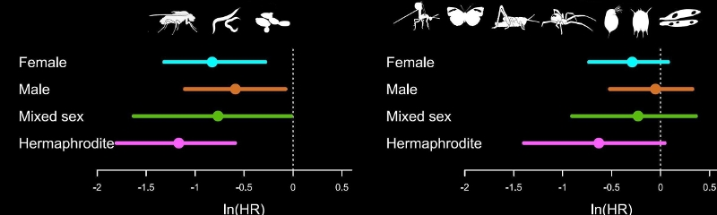

Meta-analyses are increasingly used in ecology, evolution and the environmental sciences to find general patterns among many studies, settle controversies among conflicting studies and to generate new hypotheses. These tutorials provide an introduction to running meta-analyses with the R package metafor.
